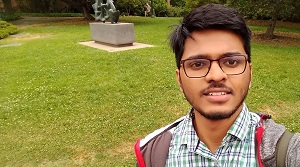
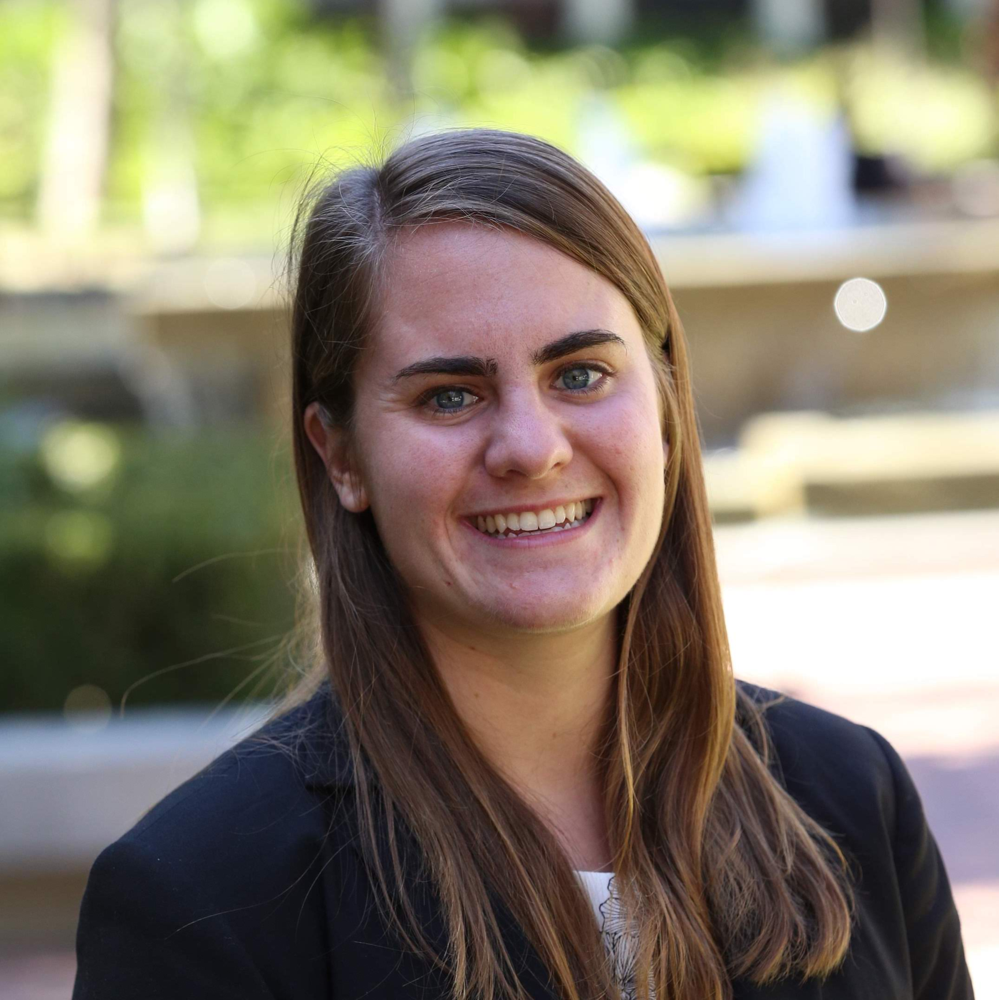

Former PhD Students
Hao Chenchen.6945@buckeyemail.osu.edu |
 |
Arti Vedulavedula.9@buckeyemail.osu.edu |
 |
Jianzong Pipi.35@buckeyemail.osu.edu |
 |
Jiacheng (Johnny) Tangtang.481@buckeyemail.osu.edu |
 |
Shiping Shaoshao.367@buckeyemail.osu.edu |
|  | Jayanth Regattiregatti.1@buckeyemail.osu.edu |
Yuntian Dengdeng.556@buckeyemail.osu.edu |
Hao Lili.@buckeyemail.osu.edu |
 |
Joseph Heymanheyman.14@buckeyemail.osu.edu |
 |
Balsam Dakhildakhil.2@buckeyemail.osu.edu |
Former MS Students
Gaurav Tendolkargrvtendolkar@gmail.com | LinkedIn |
Zhaoyuan Yangzhyyang1015@gmail.com | LinkedIn |
 |
Yongfeng Luzerolyf1019@gmail.com | LinkedIn |
Akash Agarwalakash.agarwal41992@gmail.com | LinkedIn |
Former Undergraduate Students
|  | Emily ReedEmilyRee@usc.edu | LinkedIn |
 |
Meghan Bookermebooker@princeton.edu | LinkedIn |